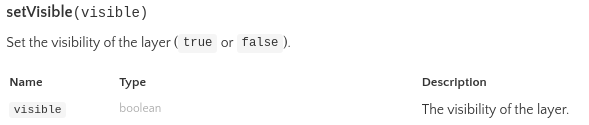
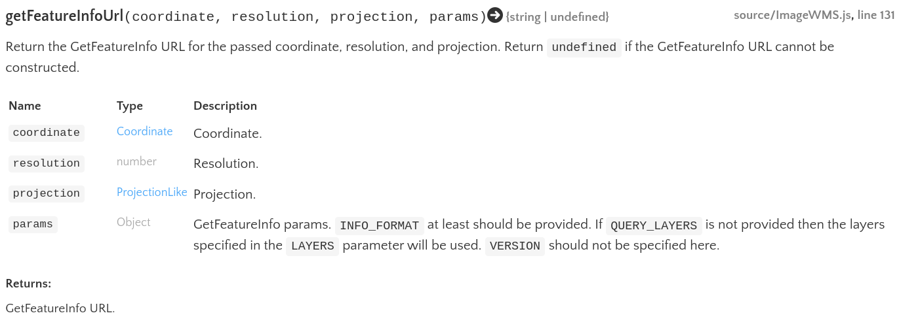
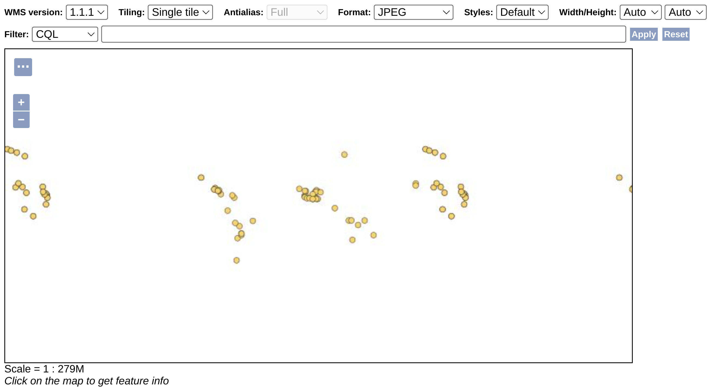
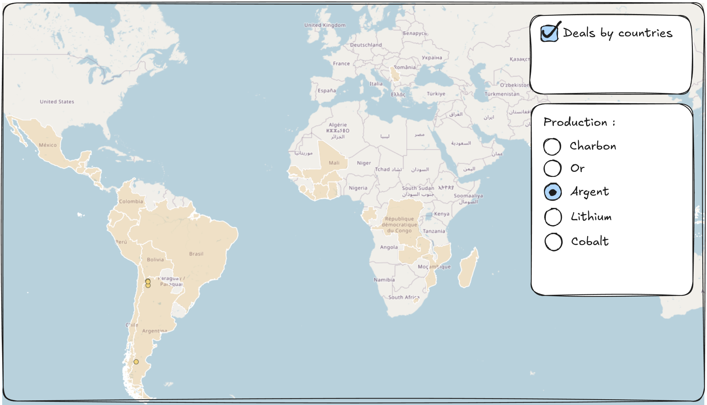
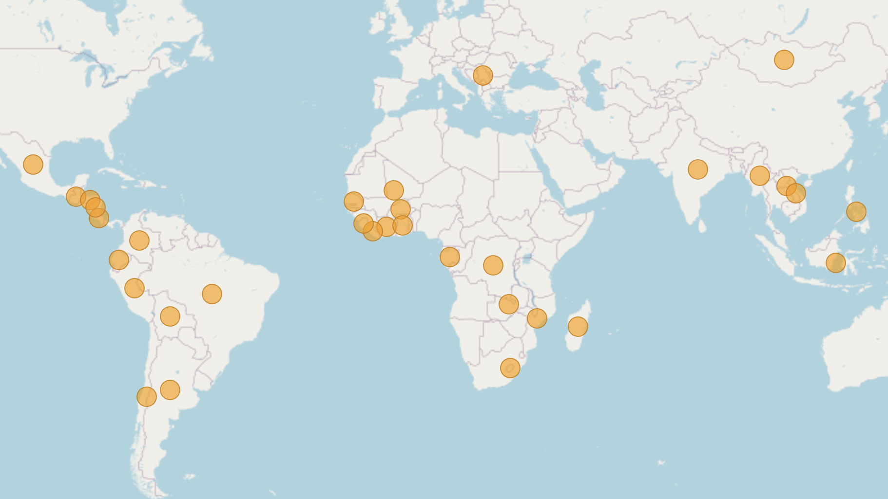
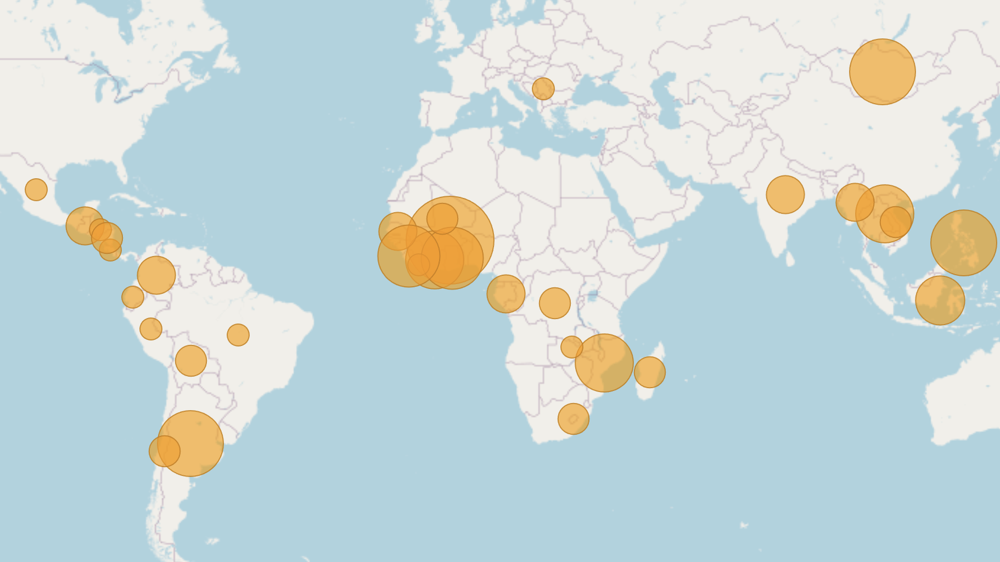

Enrichir ma carte en fonctionnalités
Enrichir ma carte OpenLayers en fonctionnalités en utilisant les capabilities de GeoServer et plus de fonctions et objets OpenLayers.
Objectifs
- Créer un menu d’affichage des couches
- Interroger une couche WMS et afficher les résultats
- Filtrer une couche WMS
- Lire un flux WFS et afficher la géométrie
- Créer un curseur d’évolution temporelle
- Ajouter une échelle à la carte
- Polir un peu l’interface de l’application avec du CSS
- Pour aller plus loin, apprendre à utiliser des plugins OpenLayers
Cours
Aujourd’hui, c’est de la pratique. M’entendre parler pendant des heures, c’est fini !

TP - Faire une carte interactive sur le thème de l’exploitation minière et ses impacts négatifs sur les populations locales
Ce TP se base sur l’architecture déployée et le code écrit au cours du TP “OpenLayers & GeoServer”.
C’est un titre à rallonge, mais voici en gros dans quelle direction la donnée de la Land Matrix va nous permettre de partir. Nous allons nous baser sur tout ce qui a été créé lors du TD “OpenLayers & GeoServer”. Si vous n’avez pas pu suivre le TD ou que vous avez égaré vos fichiers, merci de le signaler maintenant.
Créer un menu d’affichage des couches
Si jamais vous n’aviez pas eu le temps d’afficher plus d’une couche, voici le code avec lequel j’ai commencé ce TP. N’oubliez pas de remplacer les éléments comme l’adresse de votre GeoServer ! Et si votre application affiche déjà la couche “deals” et “deals_by_country”, inutile de copier mon code, c’est plus intéressant de repartir du votre.
index.html
<!DOCTYPE html>
<html lang="en">
<head>
<meta charset="UTF-8" />
<link rel="icon" type="image/x-icon" href="https://openlayers.org/favicon.ico" />
<meta name="viewport" content="width=device-width, initial-scale=1.0" />
<title>Transition Minerals</title>
</head>
<body>
<div id="map"></div>
<script type="module" src="./main.js"></script>
</body>
</html>style.css
@import "node_modules/ol/ol.css";
html, body {
margin: 0;
height: 100%;
}
#map {
position: absolute;
top: 0;
bottom: 0;
width: 100%;
}main.js
import './style.css';
import {Map, View} from 'ol';
import { ImageWMS } from 'ol/source';
import TileLayer from 'ol/layer/Tile';
import ImageLayer from 'ol/layer/Image';
import OSM from 'ol/source/OSM';
// WMS de mon GeoServer
const geoserverWms = 'http://localhost:8080/geoserver/land_matrix/wms'
// Layer: Fond de carte OSM
const layerOsm = new TileLayer({ source: new OSM() });
// Layer: deals by country
const layerDealsByCountry = new ImageLayer({
source: new ImageWMS({
url: geoserverWms,
params: { 'LAYERS' : 'land_matrix:deals_by_country' },
serverType: 'geoserver',
})
});
// Layer: deals
const sourceDeals = new ImageWMS({
url: geoserverWms,
params: { 'LAYERS' : 'land_matrix:deals' },
serverType: 'geoserver',
});
const layerDeals = new ImageLayer({
source: sourceDeals
});
// Map
const map = new Map({
target: 'map',
layers: [ layerOsm, layerDealsByCountry, layerDeals ],
view: new View({
center: [0, 0],
zoom: 2
})
});On souhaite maintenant créer un menu avec des cases de type “checkbox” qui vont nous permettre de choisir si on veut afficher ou masquer une couche. On doit commencer par créer cet élément dans l’interface en modifiant index.html.
Définissez une
<div>dans laquelle on souhaite afficher notre menu de couches et positionnez-la avec du CSSAjoutez à l’intérieur un input de type checkbox avec la balise
<input type="checkbox"/>et donnez lui un label avec le nom de la couche
Comme c’est la première fois qu’on doit écrire du HTML ensemble, je vous guide pas à pas. Commencez par ouvrir index.html et ajouter sous la div de votre carte (la div map) une autre div, comme ceci :
<div id="layers" class="menu"></div>On crée une nouvelle div dont l’identifiant est layers, ce qui nous permettra de la retrouver par la suite. On lui a aussi ajouté une classe qu’on appelle menu et qui nous permettra d’appliquer un seul style à tous nos éléments de menu. Si c’est un peu flou maintenant, vous comprendrez plus tard en ajoutant d’autres menus.
Comme notre div est vide, on ne la voit pas. Ça va être difficile de la positionner ailleurs sur la carte. J’ai l’habitude de mettre un peu n’importe quoi à l’intérieur, juste le temps de régler mon CSS correctement. Ma div ressemble donc à :
<div id="layers" class="menu">cthulhu fhtagn</div>On pourra retirer le texte après. Vous remarquerez qu’on ne voit toujours pas notre texte. Essayez de rafraîchir la page - vous devriez le voir tout en haut à gauche de l’écran avant que la carte ne le recouvre ! C’est normal, nous n’avons pas “positionné” notre élément. Ce n’est pas un cours de CSS donc on ne rentrera pas dans les détails. Ouvrez styles.css et ajoutez le code suivant :
.menu {
position: absolute;
}On sélectionne toutes les balises html avec la classe menu et on leur applique un positionnement absolu. Sauvegardez et vous devriez voir apparaître le texte. Super ! Mais… c’est moche et ça ne ressemble pas DU TOUT à un menu. Pas de souci, on y arrive. Ajoutez les éléments suivants (j’ai commenté le code pour vous aider à comprendre) :
.menu {
/* Positionnement dans le body */
position: absolute;
top: 20px;
right: 20px;
/* Padding */
padding: 8px;
/* Dimensions minimales */
min-height: 80px;
min-width: 160px;
/* Rectangle blanc avec coins arrondis */
background-color: white;
border-radius: 8px;
}Ah, c’est déjà plus sympa ! On va même pouvoir supprimer le texte de notre balise HTML dans index.html. En gros, voilà ce que je fais avec ce code CSS :
J’indique que l’élément a une position absolue dans le body (donc pas relative à un élément) et qu’il doit se trouver à 20 pixels du haut (
top) et 20 pixels de la droite (right) de l’écran.Je donne un padding, une marge intérieur, à mon élément de menu. Pour mieux comprendre, essayez de supprimer cette ligne et regardez ce qui change.
Je donne une hauteur et une largeur minimales à mon élément pour éviter qu’il ne disparaîsse quand il est vide. Par défaut, mon élément aurait grandi et rétréci avec son contenu.
J’ai donné un peu de style à mon menu en lui donnant un fond blanc et des coins arrondis.
Voilà globalement le niveau maximum de difficulté du CSS que je vais vous demander pour styliser votre application, mais vous pouvez évidemment allez plus loin !
Maintenant qu’on a un menu, il va falloir ajouter la checkbox qui permettra d’afficher ou masquer ma couche. Retournez dans index.html et ajoutez la balise <input> et son <label> dans notre <div id="layers>, comme ceci :
<div id="layers" class="menu">
<input type="checkbox" id="checkbox-countries" name="checkbox-countries" checked />
<label for="checkbox-countries">Deals by countries</label>
</div>Vérifiez que vous pouvez cliquer sur la checkbox pour la cocher/décocher. L’interface est prête ! Il faut maintenant qu’on parvienne à dire à notre application qu’il faut afficher ou masquer la couche deals_by_country en fonction.
🤔 On doit d’abord se demander comment s’y prendre pour masquer une couche dans OpenLayers.
On va se servir des méthodes qui sont disponibles pour tous les objets Layer de OpenLayers. La documentation nous apprend l’existence de la méthode setVisible(). Voilà ce qu’on nous en dit :

La méthode setVisible() prend un argument visible. Cet argument est de type “boolean”, il peut donc prendre la valeur true ou false. On va faire le test et utiliser cette fonction pour faire disparaître notre couche. Allez dans main.js et ajouter cette ligne à la fin de votre script :
layer_deals_by_country.setVisible(false);Attention ! layer_deals_by_country est le nom de la variable dans laquelle j’ai créé ma couche “deals_by_country”. Si vous avez nommé votre couche différemment, n’oubliez pas de changer le nom !
Normalement, la couche ne devrait plus être visible sur la carte. Super, la méthode a fonctionné ! Il ne nous reste plus qu’à “connecter” cette méthode à notre élément checkbox.
On l’a déjà vu dans le TP Serveurs cartographiques (lorsqu’on affichait la légende des couches), il est possible de trouver un élément HTML et de le modifier en utilisant du JavaScript. Pour trouver un élément, le plus facile est de rechercher son identifiant id. Ajoutez en bas de main.js :
const checkbox_countries = document.getElementById('checkbox-countries');
console.log(checkbox_countries);Sauvegardez et allez dans la console de votre navigateur. Vous devriez voir apparaître votre tag <input> dans la console. Si vous le survolez avec la souris, la checkbox devrait être passée en surbrillance. Si ça fonctionne, parfait ! Ça veut dire qu’on arrive bien à récupérer notre élément de checkbox. Maintenant, on souhaite exécuter du code lorsque son statut “checked” change. Pour cela, on doit “écouter” la checkbox pour savoir si l’évènement “change” a eu lieu.
const checkboxCountries = document.getElementById('checkbox-countries');
checkboxCountries.addEventListener('change', (event) => {
if (event.currentTarget.checked) {
// On fait des trucs quand la checkbox est checkée
console.log("Checked");
} else {
// On fait des trucs quand la checkbox n’est PAS checkée
console.log("Pas checked");
}
});addEventListenerindique qu’on souhaite “écouter” les évènements de notre checkbox. On précise le type d’évènement avec le premier paramètre,'change'.La condition
ifvérifie si notre checkbox est checkée ou non. On récupère cette information grâce àevent.current.checked. Si cette condition esttrue, on affiche “Checked” dans la console. Si cette condition estfalse, on affiche “Pas checked”.
Essayez ! Cliquez sur la checkbox et surveillez votre console. On voit bien s’afficher les messages. On y est presque ! Maintenant, au lieu d’afficher du texte, on souhaite afficher la couche quand la condition est true et la masquer quand la condition est false.
const checkboxCountries = document.getElementById('checkbox-countries');
checkboxCountries.addEventListener('change', (event) => {
if (event.currentTarget.checked) {
// On fait des trucs quand la checkbox est checkée
layer_deals_by_country.setVisible(true);
} else {
// On fait des trucs quand la checkbox n’est PAS checkée
layer_deals_by_country.setVisible(false);
}
});Changer le nom de la couche
layer_deals_by_countrysi vous n’avez pas appelé votre couche comme ça.Supprimer la ligne
layer_deals_by_country.setVisible(false);toute seule au dessus ou votre couche sera masquée par défaut au moment de charger la carte.
Voilà, on peut désormais afficher et masquer la couche à volonté !

À vous ! Créez une autre checkbox qui permet d’afficher ou masquer la couche deals. J’aimerais que cette checkbox soit au-dessus de la première !
Sauf indication contraire (via du CSS), les éléments HTML sont affichés dans l’ordre dans lequel ils sont déclarés.
<div id="2"></div>
<div id="1"></div>Dans cet exemple, ma div 1 sera plus bas que ma div 2. Ça devrait vous aider !
Interroger une couche WMS et afficher les résultats
On souhaite maintenant interroger la couche deals en cliquant dessus. Cette étape est plus compliquée que la précédente car elle va nous demander d’utiliser fetch(), on va donc là-aussi procéder petit à petit pour bien comprendre ce qu’on fait. Ouvrez l’exemple OpenLayers WMS GetFeatureInfo (Image Layer).
Commençons par s’intéresser à cette partie du code :
map.on('singleclick', function (evt) {
document.getElementById('info').innerHTML = '';
const viewResolution = /** @type {number} */ (view.getResolution());
const url = wmsSource.getFeatureInfoUrl(
evt.coordinate,
viewResolution,
'EPSG:3857',
{'INFO_FORMAT': 'text/html'},
);
if (url) {
fetch(url)
.then((response) => response.text())
.then((html) => {
document.getElementById('info').innerHTML = html;
});
}
});.on('singleclick')permet d’exécuter une fonction lorsqu’on clique sur la carte.document.getElementById()récupère l’élément ‘info’ dans lequel ils affichent leurs résultats.On récupère la résolution de la vue de la carte grâce à la méthode dans
viewResolution. On a besoin de passer cette résolution dans la fonction suivante.On récupère l’url qui contient les informations de l’élément cliqué avec la méthode
getFeatureInfoUrl()de la source de données.Si notre url est définie, alors on utilise la fonction
fetch()pour récupérer la donnée à partir de cette adresse.document.getElementById()récupère à nouveau l’élément ‘info’ et définir la valeur de soninnerHTMLpour pouvoir afficher les résultats.
Compliqué ? Non, ça va aller ! On va tranquillement réécrire cette fonction pour la couche deals. Pour rappel, voici comment j’appelle la couche deals dans mon code :
const sourceDeals = new ImageWMS({
url: geoserverWms,
params: { 'LAYERS' : 'land_matrix:deals' },
serverType: 'geoserver',
});
const layerDeals = new ImageLayer({
source: sourceDeals
});Je commence donc par exécuter une fonction lorsque je clique sur la carte :
map.on('singleclick', (event) => {
console.log("J’ai cliqué sur la carte !");
});Sauvegardez, gardez la console de votre navigateur ouverte et cliquez sur la carte pour vérifier que le message apparaît bien. Si c’est bon, on vient d’apprendre comment exécuter des fonctions en cliquant sur la carte ! On sait ensuite que dans l’exemple ils utilisent la méthode getFeatureInfoUrl() de leur source de données pour récupérer les informations des features. Ouvrez la documentation de ImageWMS on va en avoir besoin. Voilà ce qu’elle nous dit au sujet de la méthode fetFeatureInfoUrl() :

La méthode prend plusieurs paramètres :
coordinate, les coordonnées visées par le clic de l’utilisateurresolution, la résolution de la carte (liée à laviewde ma carte)projection, le système de projection de la carte : “EPSG:3857’”params, un objet contenant plusieurs paramètres comme le format désiré du résultat ou encore les couches qu’on souhaite interroger
Récupérons ces éléments dans l’ordre en commençant par les coordonnées. Dans l’exemple, ils référencent directement la source de coordonnées evt.coordinate dans la fonction mais ça va un peu vite. Pour mieux comprendre, on va stocker les coordonnées de notre évènement (= notre clic) dans une constante.
map.on('singleclick', (event) => {
console.log("J’ai cliqué sur la carte !");
const coord = event.coordinate;
});En fait, l’évènement ‘singleclick’ de la carte map permet de récupérer les coordonnées du clic en accédant à sa propriété coordinate. On écrit donc event.coordinate.
J’ai fait exprès de changer le nom du paramètre pour appeler tous les évènements “event” dans notre code et pour ajouter cette petite note. En fait, quand on crée une fonction, on peut nommer notre paramètre comme on veut. Par exemple, dans le code suivant :
map.on('singleclick', (event) => {
const coord = event.coordinate;
});… la variable coordinates a la même valeur que si j’écris :
map.on('singleclick', (evt) => {
const coord = evt.coordinate;
});… ou encore :
map.on('singleclick', (mon_evenement_qui_vient_de_ma_carte_avec_mon_clic) => {
const coord = mon_evenement_qui_vient_de_ma_carte_avec_mon_clic.coordinate;
});Bien sûr, si vous ne vous sentez pas encore trop en confiance, inutile de renommer ce genre d’éléments pour uniformiser le code. Vous pouvez garder ce que vous voyez dans le code OpenLayers.
Après les coordonnées, on récupère la résolution. On sait qu’on lit la résolution depuis la vue de la carte, donc on peut d’abord récupérer cette vue PUIS lire sa résolution (toujours dans notre fonction, pas à l’extérieur !) :
const view = map.getView();
const res = view.getResolution();On peut aussi enchaîner les méthodes comme ceci :
const res = map.getView().getResolution();Parce qu’on n’en est pas à faire du TypeScript ! Ils ont fait un excès de zèle dans cet exemple. Cette syntaxe étrange signifique que le type de la constante est de type “number”, donc un nombre. Mais ça on le sait déjà de toute façon, on a lu la documentation.
On est à mi-chemin et le reste est très simple. La projection doit être indiquée par une chaîne de caractères :
const proj = 'EPSG:3857';Et on reprend les paramètres de l’exemple pour indiquer qu’on veut récupérer notre réponse au format HTML. Par défaut, GeoServer renverra la table attributaire de l’élément sous forme d’un tableau en HTML.
const parametres = {'INFO_FORMAT': 'text/html'};On a tous nos éléments, il ne nous reste qu’à appeler la méthode getFeatureInfoUrl() sur notre source de données (attention, pas la couche !) pour générer l’url qui nous permettra de récupérer la réponse. La documentation nous indique que les paramètres doivent être renseignés dans l’ordre suivant :
coordinate
resolution
projection
params
const url = sourceDeals.getFeatureInfoUrl(coord, res, proj, parametres);Ou encore, pour ressembler à l’exemple :
const url = sourceDeals.getFeatureInfoUrl(
coord,
res,
proj,
parametres
);Pour récapituler, voilà à quoi ressemble ma fonction pour le moment. J’ai ajouté un console.log() pour voir l’url s’afficher dans ma console et donc bien vérifier que j’arrive à générer cette adresse.
map.on('singleclick', (event) => {
console.log("J’ai cliqué sur la carte !");
const coord = event.coordinate;
const res = map.getView().getResolution();
const proj = 'EPSG:3857';
const parametres = {'INFO_FORMAT': 'text/html'};
const url = sourceDeals.getFeatureInfoUrl(coord, res, proj, parametres);
console.log(url);
});Attention, voilà la partie plus compliquée : maintenant qu’on a une addresse, on doit utilier la fonction fetch() pour récupérer la donnée. C’est une fonction bien particulière. Elle est dite “asynchrone” car elle ne bloque pas le reste du code lorsqu’elle tourne, contrairement aux autres fonctions “synchrones”. Si j’écris une fonction reboursSynchrone(), l’exécution de mon code et donc mon application est bloquée pendant que la fonction s’exécute. Si c’est une petite fonction rapide ça ne pose pas de problème. Si c’est quelque chose de plus lent, par exemple qui demande d’attendre la réponse d’un serveur dans le cas de notre fetch, notre application est bloquée et on est bien embêtés. Au contraire, si j’écris une fonction reboursAsynchrone() l’application n’attendra pas que la fonction ait terminé de s’exécuter pour pouvoir continuer de fonctionner.
Du coup, l’asynchrone, c’est très pratique ! Par contre, comme c’est particulier et qu’il est plus difficile de prévoir quand elle va terminer son exécution et si elle va rencontrer des erreurs ou non, on va devoir lui réserver un traitement particulier. Reprenons le code de l’exemple pour l’expliquer petit à petit.
fetch(url)
.then((response) => response.text())
.then((html) => {
// J’ai modifié la ligne suivante pour simplifier, on s’intéressera à elle un peu plus tard
console.log("C’est une réussite !");
});Vous noterez l’utilisation de méthodes .then() qui contiennent des fonctions. Ce sont les fonctions à exécuter quand le maillon précédent de la chaîne a fini de se résoudre. Si on devait écrire en langage courant ce que signifie ce code, voilà ce que ça donnerait :
fetch(url)→ “Récupère les informations qui sont disponibles à cette adresse”.then((response) => response.text())→ “Ensuite (”then”), quand tu as réussi à récupérer la réponse, stocke-la dans une variable que j’appelle “response” puis utilise sa méthode.text()pour récupérer du texte au format HTML”.then((html) => { console.log("C’est une réussite !"); })→ “Ensuite, quand tu as réussi l’étape précédente, stocke le texte au format HTML de l’étape précédente dans une variable que j’appelle”html” et affiche un message dans ma console”
Vous noterez que j’ai précisé que .then() s’exécute si l’étape précédente a réussi. Si ce n’est pas le cas, l’exécution de notre chaîne de méthodes fetch() s’arrête et un message d’erreur s’affiche dans la console. Comme on a plutôt confiance en notre GeoServer, on peut se lancer et exécuter ce fetch() mais attention, seulement si on a bien une addresse à interroger ! Si la variable url est undefined, notre application risque de péter les plombs. On ajoute une condition autour du fetch() pour éviter les erreurs :
if (url) {
fetch(url)
.then((response) => response.text())
.then((html) => {
console.log("C’est une réussite !");
console.log(html);
});
}Vous pouvez tester les console.log(). Le HTML qu’on obtient n’est pas très gracieux tel quel, il vaudrait mieux l’afficher dans l’interface de l’application !

Si votre cerveau est un peu comme ça quand on parle de fetch(), n’hésitez pas à m’appeler pour avoir une nouvelle explication. J’ai peur de ne pas pouvoir faire mieux par écrit. La notion de fonction asynchrone est complexe et j’ai mis pas mal de temps à la comprendre, donc en deux minutes en plein milieu d’un TP c’est encore pire.
Sinon, vous pouvez continuer le TP, on aura d’autres occasion d’utiliser fetch(). Peut-être que les autres exemples seront plus clairs !
Quand on doit afficher un nouvel élément dans l’interface, il faut toujours penser à créer une nouvelle balise HTML (souvent une <div>) pour le mettre à l’intérieur. Comme pour l’exemple précédent, on crée une div dans le HTML. Je place la mienne après <div id="layers"> et je remets n’importe quoi dedans juste pour la voir dans mon interface.
<div id="attributes" class="menu">cthulhu ftaghn</div>Sauvegardez et regardez l’application. Et là, horreur ! Notre menu de couches est remplacé par la nouvelle div qu’on vient de créer ! C’est normal, elles ont le même style car on a aussi appelé class="menu" dans la div. Le problème, c’est que dans styles.css, on voit que tous nos menus sont positionnés au même endroit : regardez top et right.
.menu {
/* Positionnement dans le body */
position: absolute;
top: 20px;
right: 20px;
/* Padding */
padding: 8px;
/* Dimensions minimales */
min-height: 80px;
min-width: 160px;
/* Rectangle blanc avec coins arrondis */
background-color: white;
border-radius: 8px;
}On va donc devoir positionner nos deux <div> indépendamment l’une de l’autre. Pour les sélectionner individuellement, on peut utiliser le sélecteur # qui permet de chercher par id. Voilà mon code :
.menu {
/* Padding */
padding: 8px;
/* Dimensions minimales */
min-height: 80px;
min-width: 160px;
/* Rectangle blanc avec coins arrondis */
background-color: white;
border-radius: 8px;
}
#layers {
/* Positionnement dans le body */
position: absolute;
top: 20px;
right: 20px;
}
#attributes {
/* Positionnement dans le body */
position: absolute;
top: 20px;
left: 20px;
}Voilà, maintenant .menu me permet de définir un padding, des dimensions minimales, une couleur de background et des coins arrondis pour tous mes éléments avec la classe class="menu", mais par contre j’ai bien positionné indépendamment mon menu de layers et ma nouvelle div attributes.
Maintenant, modifiez le style de #attributes pour l’afficher en bas de la carte et sur toute la largeur de l’écran. Il nous faut beaucoup d’espace pour afficher notre table.
C’est bon, vous avez une <div id="attributes"> qui vous plaît ? Vous pouvez supprimer le texte qui était dans la div, on n’en aura plus besoin. Maintenant, on cherche à dire à notre application : “Prends le texte HTML que je récupère grâce à ma fonction et mets-le dans ma div Attributes”. On a formulé notre idée en langage naturel, on va maintenant pouvoir l’écrire en JavaScript. D’abord, on se demande à quel endroit dans notre code on récupère ce HTML. Souvenez-vous :
// Interroger la couche deals et afficher les résultats
map.on('singleclick', (event) => {
console.log("J’ai cliqué sur la carte !");
const coord = event.coordinate;
const res = map.getView().getResolution();
const proj = 'EPSG:3857';
const parametres = {'INFO_FORMAT': 'text/html'};
const url = sourceDeals.getFeatureInfoUrl(coord, res, proj, parametres);
if (url) {
fetch(url)
.then((response) => response.text())
.then((html) => {
// Dans cette fonction, on a accès à notre "html" !
console.log("C’est une réussite !");
console.log(html);
});
}
});Vous voyez mon commentaire ? C’est dans cette fonction qu’on va écrire notre code. Zoomons sur cette petite partie :
.then((html) => {
// Dans cette fonction, on a accès à notre "html" !
console.log("C’est une réussite !");
console.log(html);
});Si je traduis le texte précédent en langage naturel, pour rappel, ça fait :
Quand tu as réussi l’étape précédente (souvenez-vous de then), alors stocke le résultat dans une variable
htmlet :Affiche “C’est une réussite !” dans ma console
Affiche le contenu du HTML dans ma console
On aimerait remplacer les deux dernières étapes par “affiche le HTML dans mon interface”. Pour cela, on utilise la ligne de code suivante (à ajouter au bon endroit dans la fonction) :
document.getElementById('attributes').innerHTML = html;Super, vous savez maintenant requêter une couche WMS ! Le résultat est un peu moche pour le moment mais vous pourrez revenir plus tard pour l’affiner. Si vous finissez le TP en avance, revenez sur les sections “Pour aller plus loin…”.
Filtrer des couches WMS
On a vu dans l’étape précédente qu’il était possible de requêter une couche WMS. Vous ne serez donc pas surpris d’apprendre qu’il est aussi possible de filtrer ces couches ! Les flux WMS ont beau retourner une image, on constate maintenant qu’elles ne manquent pas d’interactivité.
GeoServer permet d’ajouter des filtres écrits au format cql à la requête pour lui dire “applique ce filtre à ma couche avant de m’envoyer le résultat”. Le filtrage se fait donc du côté du serveur. Vous pouvez trouver les spécifications WMS avec cql_filter ici et le tutoriel de filtrage là mais comme c’est une notion un peu complexe à appliquer seul, on va une fois de plus procéder étape par étape ensemble.
Dans votre GeoServer, prévisualisez la couche deals et cliquez sur les ... bleus en haut à gauche de la carte. Vous devriez voir plusieurs nouvelles options apparaître dont une qui s’appelle “Filter:”. L’option “CQL” devrait déjà être sélectionnée, gardez-la. C’est ce qu’on va utiliser pour la suite.

Collez le texte suivant dans le champ CQL et cliquez sur “Appliquer” :
deal_size > 10000Normalement, vous avez vu certains points disparaître. Il ne vous reste plus que les deals de plus de 10 000 hectares. Si vous avez un doute, vous pouvez vérifier en cliquant sur les points pour afficher leurs attributs. C’est facile, non ? Essayez les filtres suivant et essayez de comprendre à quoi ils peuvent servir :
silver = truetarget_country = 'Argentina'target_country = 'Argentina' OR target_country = 'Philippines'Quand vous écrivez des chaînes de caractères dans un filtre CQL (“string”), il faut impérativement utiliser les guillemets simples 'my_string' et pas les doubles "my_string".
Ne me demandez pas pourquoi, ce n’est pas expliqué, il faut juste l’accepter et vivre avec.
Bien, vous savez maintenant écrire un filtre simple en CQL, mais comment est-ce qu’on fait pour filtrer la couche depuis notre application OpenLayers ? Voici mon code pour appliquer à ma couche deals un filtre qui va uniquement récupérer les mines qui se trouvent en Argentine (Argentina) ou aux Philippines (Philippines). Comparez ce snippet avec votre code pour comprendre où mettre ce code et ce qu’il fait :
const sourceDeals = new ImageWMS({
url: geoserverWms,
params: {
'LAYERS' : 'land_matrix:deals',
"CQL_FILTER" : "target_country = 'Argentina' OR target_country = 'Philippines'",
},
serverType: 'geoserver',
});Si vous vous êtes contenté de copier-coller tout ça dans votre code, c’est raté ! Il faut regarder mon snippet de code pour comprendre ce que vous devez ajouter à votre code existant !
Sauvegardez et regardez votre carte. Si vous avez compris ce que fait mon CQL, vous devriez rapidement être capables de dire si le filtre a fonctionné ou non. Vous voyez, filtrer un flux WMS, c’est facile !
Maintenant, modifiez votre code pour afficher uniquement des mines qui produisent de l’or. Je vous donne deux indices : regardez la table attributaire de la couche deals et souvenez vous que “or” se dit “Gold” en anglais. Pour ceux qui ont eu des consoles portables, il y a une licence vidéoludique bien pratique pour retenir des noms de minéraux en anglais :

(Si vous êtes capable d’entendre ce GIF juste en le regardant, vous commencez à être vieux aussi, désolée. Quoi qu’il en soit, j’espère que les interruptions GIFs vous font un peu décompresser.)
Maintenant que vous savez filtrer la couche, vous pouvez ajouter un peu plus d’interactivité à votre carte. On va afficher un menu avec des boutons de type “radio” pour sélectionner des filtres. Je vous fais un schéma moche à la main pour vous aider à comprendre.

Vous voyez où on veut en venir ? Comme on commence à avoir l’habitude de faire des menus, je vous laisse créer et positionner celui-ci avec un peu de HTML et de CSS et on passe directement à l’ajout des boutons. On va devoir mettre dans notre élément <div> plusieurs boutons radio avec la balise <input type="radio">. Voilà le code pour les éléments “Or” et “Argent” :
<!-- Radio button menu - production -->
<div id="production" class="menu">
<div>
<input type="radio" id="button-gold" name="produce" value="gold" />
<label for="gold">Or</label>
</div>
<div>
<input type="radio" id="button-silver" name="produce" value="silver" />
<label for="silver">Argent</label>
</div>
</div>Vous noterez plusieurs choses :
<input>et<label>vont par pairesla balise
<label>contient le nom en français de mon élément, c’est ce qui s’affiche dans l’applicationtoutes les balises
<input>on la même propriéténame="produce", on dirait donc qu’il vaut mieux continuer dans ce senson a une propriété
idunique à chaque<input>qui nous permettra, au besoin, d’aller les chercher avec du JavaScriptla propriété
valuede mes<input>semble correspondre à des colonnes de la table attributaire de ma couche
Avec ces éléments, ajoutez les boutons pour Charbon, Lithium et Cobalt comme indiqués sur mon schéma plus haut. Attention à bien mettre Charbon en haut ! Quand c’est terminé, allez sur votre carte et cliquez un peu sur ces boutons radio. Normalement, vous ne pouvez pas sélectionner plus d’un seul élément à la fois au sein du groupe. Votre application sait que tous ces boutons font partie du même groupe car vous leur avez tous donné la même valeur name="produce". Si vous commencez à modifier cette valeur, vous verrez apparaître un comportement indésirable.
Une fois que votre menu est prêt, bien positionné sur la carte et que vos cinq boutons radio fonctionnent, on va pouvoir passer au JavaScript. Comme d’habitude, on va exprimer notre besoin en langage naturel : “Lorsque je sélectionne un minéral, je souhaite modifier le filtre de ma couche deals pour récupérer uniquement les deals qui produisent les minéraux sélectionnés”.
Pour rappel, voici les éléments dont on dispose :
on a des boutons radio avec une valeur
valuequi correspond à une colonne de la table attributairevous avez déjà une couche qui filtre les deals qui produisent de l’or avec un filtre CQL
le filtre CQL est tout simplement une chaîne de caractères (string)
Le résultat auquel on voudrait arriver, c’est donc : “Mon CQL dans les params de la source de ma couche deals change dès que je sélectionne un nouveau minéral”.
Ça tombe bien ! La documentation de la source ImageWMS (celle qu’on utilise pour notre couche) nous apprend qu’il existe une méthode .updateParams() qui permet de mettre à jour les paramètres d’une couche.
Commencez par ajouter ces deux éléments en bas de main.js. Souvenez-vous de la manière dont on a “écouté” notre checkbox du premier exercice de ce TP. Le code ressemble beaucoup, non ?
const buttonGold = document.getElementById('button-gold');
buttonGold.addEventListener('change', () => {
console.log("Test");
});Voici ce que font les deux éléments du code :
la première ligne récupère mon bouton radio qui grâce à son identifiant en utilisant la méthode
.getElementById()que vous avons déjà vue précédemmentles trois lignes suivantes nous permettent d’écouter notre bouton radio grâce à
.addEventListener()et d’exécuter une fonction quand le bouton radio est coché, et la fonction affiche “Test” dans la console de développement
On y est presque. On arrive à exécuter quelque chose quand on sélectionne “Or” dans notre carte, mais ça ne nous permet pas de filtrer la couche. On va retirer notre console.log() et demander à JavaScript de modifier les paramètres de la source de notre couche deals grâce à la ligne suivante :
sourceDeals.updateParams({ 'CQL_FILTER' : 'gold=true' });Pour rappel, la source de mes deals est stockée dans la variable sourceDeals mais attention, il est possible que la votre porte un autre nom. Pensez à vérifier !
Histoire de pouvoir tester au moins avec les boutons “Or” et “Argent”, je vous donne un snippet de code plus complet. Inspirez-vous aussi des commentaires que je laisse, je rappelle que j’attends un code commenté pour l’évaluation !
// Or
const buttonGold = document.getElementById('button-gold');
buttonGold.addEventListener('change', () => {
// Quand l’utilisateur clique sur le bouton "Or", je mets à jour mon filtre CQL
sourceDeals.updateParams({ 'CQL_FILTER' : 'gold=true' });
});
// Argent
const buttonSilver = document.getElementById('button-silver');
buttonSilver.addEventListener('change', () => {
sourceDeals.updateParams({ 'CQL_FILTER' : 'silver=true' });
});Testez l’application en cliquant alternativement sur les boutons radio de Or et Argent. Si les deux couches sont différentes, super, ça fonctionne !
Maintenant que vous avez compris comment faire, faites les étapes suivantes (et souvenez-vous que c’est à vous que je demande, pas à Chat-GPT, je vous ai quand même déjà bien mâché le travail avec l’exemple ci-dessus !).
on a créé un filtre fonctionnel pour Or et Argent, maintenant faites la même chose pour toutes les autres options
quand vous avez terminé, rajoutez une option “Tous” avec la valeur
value="all"et faites en sorte qu’il affiche tous les deals (je vous ai mis des indices ci-dessous si vous avez du mal mais essayez d’abord de réfléchir sans)
Souvenez vous : si vous voulez ajouter un élément à l’interface, commencez par index.html.
Comme on écrit du code JavaScript, on doit le faire dans main.js. Comme pour les autres options, vous pouvez récupérer le bouton radio avec .getElementById() puis l’écouter avec .addEventListener().
Pour ce qui est du filtre CQL : si on veut tous les deals, il suffit que notre filtre soit vide. Donc vous devriez avoir quelque part une chaîne de caractères (string) vide.
Une fois que c’est terminé et que vous avez un beau menu fonctionnel pour filtrer vos couches, on peut passer à la suite !
Des cercles proportionnels avec un flux WFS
On commence à avoir fait le tour des interactions basiques avec les flux WMS, qui pour rappel nous envoient des images. Mais, si vous vous souvenez bien, on a aussi évoqué dans le premier cours la possibilité de récupérer non pas une image mais des vecteurs grâce aux flux WFS. C’est ce qui va nous intéresser maintenant : notre objectif va être d’afficher notre couche deals_by_country_centroid et de la styliser pour afficher des cercles proportionnels. Et vous allez voir que récupérer une couche WFS avec OpenLayers, c’est du gâteau.
Je vous donne la structure du code à écrire dans main.js. N’oubliez pas que les éléments encadrés par des chevrons "<un_truc>" doivent être remplacés par une vraie valeur. Par exemple, si je vous écris const formation = "<ma_formation>", vous devrez mettre dans votre code const formation = "geonum". Facile ! Voilà donc le snippet de base :
// N’oubliez pas de mettre un commentaire pour m’expliquer ce que vous faites
const sourceCentroid = new VectorSource({
format: new GeoJSON(),
url: '<mon_flux_wfs>'
});
const layerCentroid = new VectorLayer({
source: sourceCentroid,
});… et les imports à ajouter tout en haut du fichier :
import VectorSource from 'ol/source/Vector';
import GeoJSON from 'ol/format/GeoJSON.js';
import VectorLayer from 'ol/layer/Vector';Vous remarquez que vous avons un élément <mon_flux_wms> à remplacer. Pour trouver l’URL de ce flux, allez dans votre interface GeoServer, sélectionnez “Prévisualisation de la couche”. Cette fois, au lieu de choisir “OpenLayers” (qui nous donne le flux WMS), allez dans la colonne “Tous les formats” et sélectionnez GeoJSON. Je rappelle qu’on ne travaille plus sur la couche deals mais bien sur la couche deals_by_country_centroid. Il ne vous reste plus qu’à copier l’URL dans votre navigateur : c’est la valeur de url dans votre VectorSource().

Il ne reste plus qu’une seule étape pour afficher la couche sur la carte. Je vous laisse trouver laquelle !
Vous l’avez déjà fait plusieurs fois dans le TP précédent et celui-ci, et c’est souvent une étape qu’on oublie.


Bon, d’accord. Dites-moi, comment se porte l’attribut layers de votre objet map ?

Une fois cette étape complétée, la couche devrait apparaître sur votre carte. Super ! Par contre, ça ressemble certainement à des cercles blancs, un peu transparents, avec un contour bleu. Et surtout, ce ne sont pas des cercles proportionnels !
Heureusement, vous avez été bien attentifs pendant vos cours de Leaflet et vous avez déjà stylisé des couches à partir de donnée GeoJSON, ça devrait être super facile pour vous. Comme la documentation GeoServer n’est pas très claire sur ce point, je vous donne un snippet et je vais vous demander de l’ajuster un peu pour vérifier que vous comprendez bien qui fait quoi.
D’abord, on importe les éléments de style dont on va avoir besoin :
import {Circle, Fill, Stroke, Style} from 'ol/style.js';On commence par créer un style “pas proportionnel” qu’on stocke dans la constante styleCentroid.
const styleCentroid = new Style({
image: new Circle({
radius: 40,
fill: new Fill({ color: 'white' }),
stroke: new Stroke({ color: 'blue', width: 5 }),
}),
});N’oubliez pas d’appeler votre style dans la propriété style de votre VectorLayer ou bien la couche ne changera pas.
const layerCentroid = new VectorLayer({
source: sourceCentroid,
style: styleCentroid // On a rajouté cette ligne
});Attention à l’ordre dans lequel vous ajoutez les éléments dans le code. N’oubliez pas que pour appeler une constante (ou une variable) comme styleCentroid, il faut avoir défini celle-ci avant !
Regardez à quoi ressemble la couche maintenant qu’on lui a donné un style. C’est moche, hein ? Et bien c’est à vous de la rendre belle. Modifiez le code pour obtenir quelque chose qui ressemble à ça :

Notez que les cercles ne sont pas entièrement opaques. Prenez le temps de vous appliquer, cela vous servira de base pour la suite. Quand vous avez terminé, vous pourrez utiliser ce snippet pour afficher des cercles proportionnels.
function getStyleCentroid(feature) {
const nDeals = feature.get('n_deals');
const rayon = Math.sqrt(nDeals) * 0.01;
const style = new Style({
image: new Circle({
radius: rayon,
fill: new Fill({ color: 'white' }),
stroke: new Stroke({ color: 'blue', width: 5 }),
}),
});
return style;
}
const layerCentroid = new VectorLayer({
source: sourceCentroid,
style: getStyleCentroid,
});Vous noterez que la différence principale ici est qu’on appelle une fonction et non une constante, et que cette fonction prend feature en argument. En fait, ce qu’il se passe, c’est que la fonction va regarder chaque objet de ma couche (chaque feature) et appliquer les étapes qu’on a définies à l’intérieur.
on lit un attribut de notre
featureavec la méthode.get()on calcule un rayon
on définit notre style comme précédemment, mais au lieu d’être une valeur fixe, notre propriété
radiusprend la valeur de notre rayon
Je suis restée volontairement vague dans ce cas pour ne pas vous souffler toutes les réponses. Comme précédemment, vous allez devoir modifier le snippet de code pour rendre la couche un peu plus élégante. Je vous montre mon exemple, essayez de le reproduire le plus fidèlement possible :

Une fois que c’est terminé, il reste un dernier exercice à faire avec ces cercles proportionnels. Vous aurez compris qu’ici, nos cercles sont proportionnels au nombre de deals qui sont enregistrés dans le pays. Maintenant, créez une couche de cercles proportionnels en vous basant sur la surface total couverte par les deals dans chaque pays.
On arrive sur la fin du TP et vous commencez (j’espère) à bien comprendre comment fonctionne notre application donc je ne vous donne pas d’indices. Faites juste attention à bien faire varier la taille des cercles petit à petit : si jamais votre navigateur essaie de dessiner des cercles trop grands, vous avez des chances de faire crasher votre ordinateur (ça m’est peut-être arrivé pendant mes tests et ce serait dommage que ça vous arrive aussi).
L’étape finale !
Enfin l’étape finale du TP ! Une fois que votre application fonctionne et qu’elle vous convient, n’oubliez SURTOUT PAS de la build ! Pour le moment, vous travaillez dans ce qu’on appelle un environnement de développement mais quand vous êtes prêts à pousser une application en production, il faut la build. On l’a déjà fait au début du TP précédent mais je vous remets les instructions ici parce que je suis bien sympa (et que vous avez sûrement le cerveau en compote après tout ça) :
ouvrez un terminal à la racine de votre projet
utilisez la commande
cd apppour vous déplacer dans le dossier de votre applicationutilisez la commande
npm run buildpour build votre application, le résultat sera mis dans le dossier/distallez sur http://localhost/ et vérifiez que vous voyez bien la dernière version de votre application
Et voilà, bien joué ! Vous n’avez plus qu’à m’appeler pour me montrer le résultat.

J’ai fini en avance, qu’est-ce que je fais ?
Déjà, bravo, c’était un gros TP. S’il reste du temps, je vais rajouter ici petit à petit des tâches pendant le TP qui vous permettront d’aller un peu plus loin et de préparer votre code pour l’évaluation. En attendant :
vérifiez bien l’intendation de votre code
vérifiez aussi qu’il soit bien commenté
améliorez le style des couches WMS comme WFS pour avoir une carte harmonieuse et un peu stylée
ajoutez un titre à votre page
ajoutez une échelle (avec OpenLayers)
Rajouté à la fin MAIS À FAIRE QUAND MÊME : une table attributaire personnalisée
On va se réintéresser à notre couche WMS “deals” et à sa table attributaire (souvenez-vous : Interroger une couche WMS et afficher les résultats). Je vous remets notre code ici pour vous rappeler quels éléments permettent de récupérer la table attributaire. Attention au nom de vos couches et de vos sources, ce ne sont peut-être pas les mêmes que les miens !
map.on('singleclick', (event) => {
const coord = event.coordinate;
const res = map.getView().getResolution();
const proj = 'EPSG:3857';
const parametres = {'INFO_FORMAT': 'text/html'};
const url = sourceDeals.getFeatureInfoUrl(coord, res, proj, parametres);
if (url) {
fetch(url)
.then((response) => response.text())
.then((html) => {
document.getElementById('attributes').innerHTML = html;
});
}
});Faites attention à cet élément :
const parametres = {'INFO_FORMAT': 'text/html'};Notez qu’on demande en fait à notre GeoServer de nous donner la réponse de notre requête au format text/html. C’est sympathique, mais difficile à customiser et surtout pas super pratique quand la table attribuaire est LONGUE. Heureusement, on peut récupérer le résultat au format JSON qui sera bien pratique pour customiser notre table.
Comme toujours, quand on souhaite ajouter un nouvel élément à notre carte, il faut qu’on commence par écrire du HTML. On va modifier notre div id="attributes" pour y ajouter une table. Récupérez le code ci-dessous et regardez la différence, vous allez comprendre.
<div id="attributes" class="menu">
<!-- Je crée une table -->
<table>
<!-- On utilise l’élément tr pour créer une ligne : tr = table row -->
<tr>
<!-- On utilise les éléments th (table header) pour créer les headers de nos trois colonnes -->
<th>Deal ID</th>
<th>Creation date</th>
<th>Country</th>
</tr>
<!-- On utilise l’élément tr pour créer une AUTRE ligne : tr = table row -->
<tr>
<!-- On crée trois colonnes vides avec td -->
<td>…</td>
<td>…</td>
<td>…</td>
</tr>
</table>
</div>Vous devriez maintenant voir apparaître une table dans votre div. Elle est austère, d’accord, mais vous pourrez la styliser après. Pour le moment, on va faire avec. Regardez bien mes commentaires pour comprendre comment est structuré le code. Regardez bien ces trois éléments :
<td>…</td>
<td>…</td>
<td>…</td>Vous comprenez sûrement qu’on souhaite remplacer ces “…” par des valeurs lorsqu’on clique sur un point de la couche. Il va donc falloir modifier cet élément HTML avec nos fonctions JavaScript. Souvenez-vous qu’on utilise les identifiants pour retrouver les éléments HTML avec .getElementById(). Donc :
<td id="table-deal-id">…</td>
<td id="table-creation-date">…</td>
<td id="table-country">…</td>Maintenant qu’on a nos éléments, il va falloir les remplir. Retournez chercher votre méthode map.on() dans votre code, on va devoir l’améliorer un peu.
map.on('singleclick', (event) => {
const coord = event.coordinate;
const res = map.getView().getResolution();
const proj = 'EPSG:3857';
const parametres = { 'INFO_FORMAT': 'application/json' } // On a changé un truc ici
const url = sourceDeals.getFeatureInfoUrl(coord, res, proj, parametres);
if (url) {
fetch(url)
.then((response) => response.text())
.then((json) => { // On a aussi changé un truc ici et dans la fonction
const obj = JSON.parse(json);
console.log(obj);
});
}
});Testez votre couche et regardez le résultat dans la console. Si tout a fonctionné, vous devriez voir un objet JavaScript ! Dépliez-le et prenez le temps de l’explorer dans votre console pour comprendre ce que vous regardez. L‘information qui nous intéresse est quelque part dans features. Voilà ce qu’on doit faire avec la donnée :
vérifier qu’on a bien cliqué sur une feature sur la carte (en JavaScript, ça demande de vérifier qu’on a bien de la donnée dans
features)récupérer la
featuresur laquelle j’ai cliqué pour pouvoir accéder à sespropertiesrécupérer mes cellules pour remplacer leur contenu
remplacer le contenu des cellules de ma table avec les
properties
On va procéder petit à petit. D’abord, on vérifie qu’on a bien une feature dans feature :
if (url) {
fetch(url)
.then((response) => response.text())
.then((json) => { // On a aussi changé un truc ici et dans la fonction
const obj = JSON.parse(json);
if (obj.features[0]) {
console.log("J’ai cliqué sur une feature !");
} else {
console.log("J’ai cliqué à côté…");
}
});
}On utilise une condition if pour tester la présence d’une feature dans obj. obj.features[0] peut se traduire par : “Récupère mon tableau feature de mon obj et prends le premier élément”. La condition regarde simplement si feature[0] est vide ou non. Si ce n’est pas vide, on a reçu quelque chose, on a donc cliqué sur une feature. Au contraire, si c’est vide, c’est qu’on a cliqué à côté. Testez la fonction avant de passer à la suite.
Si on a bien récupéré une feature, cela veut dire qu’on peut récupérer ses properties. Il suffit d’ajouter au bon endroit de la fonction les deux lignes suivantes :
const properties = obj.features[0].properties;
console.log(properties);Vous commencez à comprendre comment on accède à un élément dans un objet JavaScript. Il suffit d’appeler la propriété qu’on veut avec .<propriété>. Regardez comment est structuré votre objet properties dans la console du navigateur. Maintenant, modifiez la ligne console.log(properties); pour afficher la propriété target_country. Quand c’est réussi, passez à la suite !
Très bien, on sait maintenant récupérer des propriétés. Il ne nous reste plus qu’à modifier le HTML de notre document en conséquence en utilisant .innerHTML ! Je vous donne le code pour la colonne deal_id et je vous laisse compléter le code pour les deux autres colonnes.
if (url) {
fetch(url)
.then((response) => response.text())
.then((json) => {
const obj = JSON.parse(json);
if (obj.features[0]) {
console.log("J’ai cliqué sur une feature !");
const properties = obj.features[0].properties;
console.log(properties);
// On affiche deal_id dans notre table
document.getElementById('table-deal-id').innerHTML = properties.deal_id;
} else {
console.log("J’ai cliqué à côté…");
// On a cliqué "nulle part" donc on remet des … dans la colonne "deal_id"
document.getElementById('table-deal-id').innerHTML = "";
}
});
}Testez votre application. Normalement, ça marche ! Quand vous cliquez sur une feature, vous devriez récupérer son ID. Voilà comment on crée une table customisée pour interroger une couche ! Maintenant, à vous de compléter les deux autres colonnes. Une fois que vous avez réussi, ajoutez une colonne qui montre la valeur de mineral_resources pour le deal sur lequel vous cliquez. Et quand ça aussi ça fonctionne, prenez quelques minutes pour styliser votre table ! Google est votre ami (et ok, pourquoi pas ChatGPT si vous y tenez vraiiiiment, ça ne me dérange pas si c’est pour du CSS comme <table> commence à être complexe, mais on utilise l’IA intelligemment svp).
J’ai fini ça aussi !
Fantastique ! Eh bien maintenant, débrouillez-vous pour ajouter une échelle à votre carte. Ça devrait vous occuper un moment, j’espère. Je vous donne ça, à vous de le mettre au bon endroit :
import ScaleLine from 'ol/control/ScaleLine.js';Un autre morceau, pour créer l’objet “échelle” :
const scaleline = new ScaleLine();Et enfin, trouvez comment ajouter ça à votre code existant :
const map = new Map({
controls: [scaleline],
});Et voilà !
Bon, ben j’ai AUSSI une échelle sur ma carte…
Bravo ! Vous pouvez répéter L’étape finale ! pour build votre application. Ensuite, je vous conseille de commencer à ajouter à votre carte des éléments dont vous avez besoin pour vos projets GeoNum. Vous pourriez vouloir par exemple un curseur temporel, des tooltips, etc. Commencez par faire des recherches parmi les exemples d’OpenLayers mais aussi dans les extensions disponibles sur ol-ext histoire de faire un tour des possibilités.
Et suivant le temps qu’on a, on peut éventuellement commencez à regardez QGIS Server ensemble pendant le TP, sinon je vous ajouterai une petite note sur le site si jamais vous préférez l’utiliser pour vos projets. Quoi qu’il en soit, vous ne serez pas notés dessus !
Cette fois, c’est vraiment fini !
Merci pour votre attention !